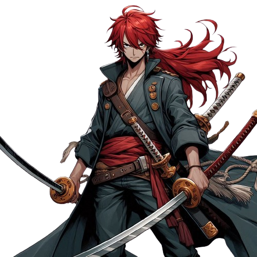

-
Jack Lucci
Poder 3200
Descrição:
HP 900
Seu poder vem da kuro kuro no mi, Modelo: Pantera , que é uma akuma no mi do tipo Zoan Carnívora , que permite ao usuário transformar-se numa pantera negra híbrida , e faz ao usuário ser o homem pantera.
-
Davy Rock
Poder 3000
Descrição:
HP 900
Davy Rock, mais conhecido como "Olho de Ambâr", tem o poder de se transformar em rocha, deixando todo seu corpo indestrutível, aumentando sua força e resistência aos combates corpo-a-corpo. Davy adquiriu seu poder após consumir a Rock Rock no Mi -Fruta da Rocha-.
-

Riku
Poder 2250
Descrição:
HP 900
Era uma vez, em um mar distante e cheio de mistérios, um pirata chamado kaito. Ele era um homem peculiar. Sua arma favorita era uma katana afiada, que ele manuseava com uma destreza impressionante. Seu maior inimigo eram os Teriubitos, uma raça tirânica que pensão que são superiores a tudo e todos, extorquindo os e impondo medo a todos ao seu redor já q seu poder político era tão grande que qualquer problema os próprios almirantes podiam resolvê-los.Seu objetivo é destruir marijoais q acabar com sua tirania e libertar os oprimidos por eles
-
Charlote
Poder 900
Descrição:
HP 900
Seu poder vem da Nusu Nusu no mi , uma fruta rara que foi roubada por ela, que é uma akuma no mi que permite o usuário clonar/roubar a habilidade de outros piratas
.png)